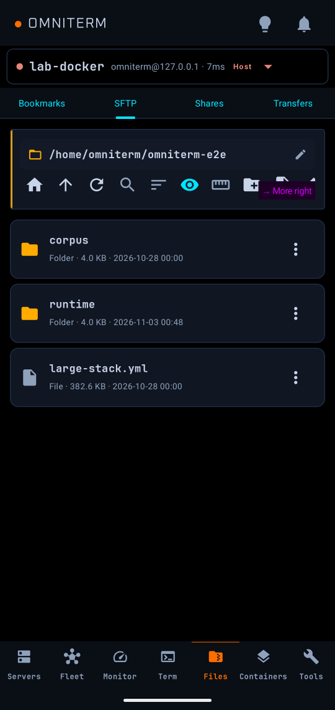

Files and shares

SFTP
Under Files, browse the selected SSH host: upload, download, rename, delete, create folders and files, and edit text files in the built-in editor (line numbers, syntax highlighting, find and replace). Multi-select supports batch copy, cut, download and delete. Search filters the folder live or recursively, with glob wildcards. Archives can be created (zip, tar, tar.gz) or extracted on the server. A second pane shows another host for streamed transfers between the two. Sudo-assisted writes need authentication first.
Network shares
The Shares tab browses SMB, FTP, SFTP and WebDAV shares with the same multi-select, search, sort and in-app editing. A LAN scan finds SMB, FTP, SFTP, NFS and WebDAV services and saves them as profiles; NFS and custom profiles are save-only for now. WebDAV has an explicit Use HTTPS switch.
Copying between places
Copy or cut in one share and paste into another share or an SSH host, in either direction. Same-host SFTP pastes run on the server; everything else streams through the phone without buffering the whole file, so very large files work. Tick Include folders to copy whole folders.
Bookmarks and transfers
Star a folder to bookmark it across hosts and shares. The Transfers tab shows per-file progress, speed and ETA, and any transfer can be cancelled.
Sharing into OmniTerm
Share files from another app to OmniTerm and pick the host and folder with Upload here. Nothing is read or uploaded until you tap, and OmniTerm keeps no copy.
The README is the full reference for every feature. Found a mistake? Open an issue.